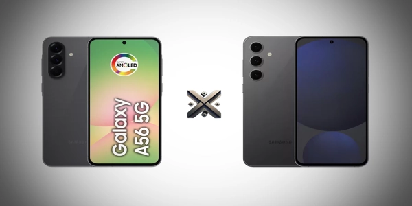

Caso esteja indeciso entre o Galaxy A56 5G e o Galaxy S24 FE, este comparativo detalhado foi preparado para te auxiliar a identificar qual dos dois se adapta melhor ao seu estilo de uso e expectativas. Vamos analisar aspectos como ficha técnica, desempenho, câmeras, bateria, preço e muito mais para que você possa tomar a melhor decisão de compra.
Ambos os smartphones oferecem ótimos recursos, mas se destacam em pontos diferentes. Entender essas diferenças é essencial para escolher o que realmente faz sentido para o seu dia a dia.

O Galaxy A56 5G é equipado com o processador Exynos 1580, que oferece desempenho satisfatório para tarefas do dia a dia, redes sociais, navegação e jogos leves. Ele tambem é resistente à água. Os 8 GB de RAM permitem um multitarefa eficiente, enquanto o armazenamento interno de até 256 GB é mais que suficiente para a maioria dos usuários. O Galaxy S24 FE conta com o avançado processador Exynos 2400e, projetado para garantir performance de alto nível em tarefas pesadas, como games exigentes, edição de vídeos e aplicações voltadas para uso profissional. Além disso, a disponibilidade de até 512 GB de armazenamento interno garante espaço de sobra para arquivos, aplicativos e mídia, sem necessidade de preocupações. O dispositivo também conta com certificação de resistência à poeira e à água, oferecendo mais segurança no uso diário. Onde comprar: Ambos os modelos estão disponíveis em lojas online, redes varejistas e distribuidores autorizados. Compare preços, confira avaliações e fique atento a promoções e condições de pagamento para garantir um bom negócio. O Galaxy A56 5G chama a atenção pela sua bateria robusta de 5.000 mAh aliada à recarga rápida de 45W, permitindo alcançar carga completa em menos de uma hora. Essa combinação é ideal para quem precisa de energia duradoura ao longo de um dia intenso longe de tomadas. Por outro lado, o Galaxy S24 FE aposta em uma bateria de 4.700 mAh, que, embora um pouco menor, se beneficia de um processador mais eficiente, garantindo bom rendimento energético. O modelo ainda se diferencia ao incluir suporte a carregamento sem fio de 15W — um recurso ausente no A56 — e compatibilidade com a função PowerShare, que permite compartilhar energia com outros dispositivos. O Galaxy A56 5G foi desenvolvido para quem busca um equilíbrio entre performance e preço acessível, oferecendo uma experiência eficiente sem pesar no bolso. Com boas câmeras, bateria durável e conectividade 5G, ele atende muito bem ao usuário médio. O Galaxy S24 FE, embora mais caro, é destinado ao público que exige desempenho avançado, quer longevidade nas atualizações e qualidade superior de câmeras. O valor mais alto se justifica para quem busca um celular mais completo e durável. Além do desempenho e dos recursos técnicos, o visual também conta na hora de escolher um novo smartphone. Se o seu foco é um smartphone moderno com conectividade 5G, boa performance diária, bateria de longa duração e preço acessível, o Galaxy A56 5G deve atender suas expectativas com folga. Mas se você está disposto a investir mais em um celular que traz recursos avançados de câmera, melhor desempenho em jogos, tela mais brilhante e promessas de atualizações por 7 anos, o Galaxy S24 FE entrega uma experiência de alto nível com um ótimo custo-benefício dentro do segmento premium acessível.📅 Lançamento e Preço
Galaxy A56 5G
Galaxy S24 FE
📱 Detalhes Técnicos
Especificações
Galaxy A56 5G
Galaxy S24 FE
Tela
Painel Super AMOLED de 6,7", com resolução Full HD+ e taxa de atualização de 120 Hz
Display Dynamic AMOLED 2X, 6,7", Full HD+, 120 Hz e brilho de até 1900 nits
Chipset
Processador Exynos 1580
Processador Exynos 2400e de última geração
Memória RAM
8 GB
8 GB
Armazenamento
Modelos com 128 GB ou 256 GB
Opções com 256 GB ou 512 GB
Câmeras Traseiras
Conjunto com 50 MP (principal) e 12 MP (ultra grande-angular)
Triple câmera: 50 MP (principal), 8 MP (telefoto) e 12 MP (ultra angular)
Câmera Frontal
12 MP para selfies
10 MP para autorretratos
Bateria
5.000 mAh com carregamento rápido de até 45W
4.700 mAh, suporta recarga rápida de 25W e carregamento sem fio de 15W
Sistema Operacional
Executa Android 14 com a interface personalizada One UI 6.1
Android 14 com One UI 6.1 e garantia de atualizações por até 7 anos
Certificação de Proteção
IP67: resistência contra poeira e imersão leve em água
IP68: proteção mais avançada contra água e partículas sólidas
Variedade de Cores
Disponível nas cores Rosa, Verde, Preto e Cinza
Oferecido nas versões Azul, Verde, Cinza e Grafite
⚙️ Desempenho
📸 Câmeras + Onde Comprar
Galaxy A56 5G
Galaxy S24 FE
🔋 Bateria
💰 Custo-Benefício
🎨 Opções de Cores
📝 Conclusão